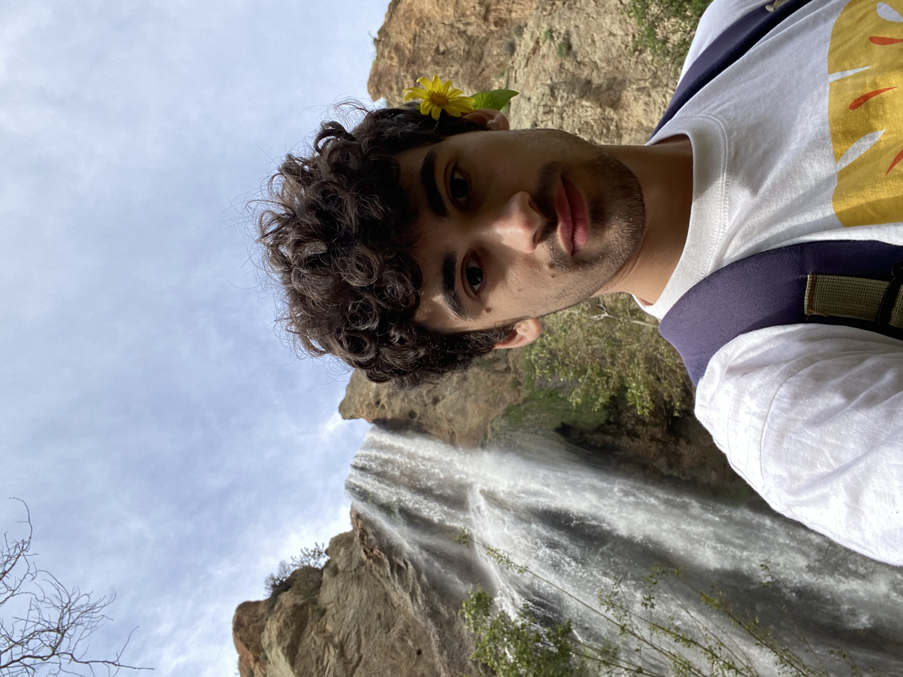

<div style="display: flex; align-items: flex-start; gap: 20px;">
    
    <div style="flex-grow: 1;">
        <h3 style="margin-top: 0; margin-bottom: 5px;">
            About me
        </h3>
        <p style="margin-top: 0;">
            I am a third year PhD candidate in the department of Biostatistics at University of California, Los Angeles (UCLA),
            where I work under the supervision of Professor <a href="https://suchard-group.github.io/" target="_blank">Marc Suchard</a>.
            Previously, I have obtained a Master in Economic and Social Sciences at Bocconi University (Milan, Italy)
            where I completed my thesis under the supervision of Professor  <a href="https://mypage.unibocconi.edu/igorpruenster/" target="_blank">Igor Pruenster</a>.
        </p>
    </div>
</div>

<!--<div id="cover-container" style="text-align: center;">-->
<!--    -->
<!--    <p id="cover-caption">Royce Hall at UCLA</p>-->
<!--    <button id="change-cover-btn" style="margin-top: 10px; padding: 10px 20px; font-size: 16px;">Change Cover</button>-->
<!--</div>-->

<!--<script>-->
<!--    const covers = [-->
<!--        { src: "assets/img/royceHall2.png", caption: "Royce Hall at UCLA" },-->
<!--        { src: "assets/img/ComoSchool.jpg", caption: "Teaching at Como with Marc" },-->
<!--        { src: "assets/img/onTheOcean.png", caption: "By the ocean in Santa Monica" },-->
<!--        { src: "assets/img/benchesLA.png", caption: "Los Angeles from Will Rogers Park" },-->
<!--        { src: "assets/img/landscapeLA.png", caption: "Los Angeles from the Getty" }-->
<!--    ];-->

<!--    let currentIndex = 0;-->

<!--    document.getElementById("change-cover-btn").addEventListener("click", () => {-->
<!--        currentIndex = (currentIndex + 1) % covers.length;-->

<!--        // Update the existing image and caption-->
<!--        const coverImage = document.getElementById("cover-image");-->
<!--        const coverCaption = document.getElementById("cover-caption");-->

<!--        if (coverImage && coverCaption) {-->
<!--            coverImage.src = covers[currentIndex].src;-->
<!--            coverCaption.textContent = covers[currentIndex].caption;-->
<!--        }-->
<!--    });-->
<!--</script>-->

<!-- - "assets/img/fanShounakBNP.jpg": "BNP 2025 (LA) with Fan and Shounak"-->


<!--I am a third year Phd candidate in the department of Biostatistics at University of California, Los Angeles (UCLA),-->
<!--where I work under the supervision of Professor <a href="https://suchard-group.github.io/" target="_blank">Marc Suchard</a>.-->
<!--Previously, I have obtained a Master in Economic and Social Sciences at Bocconi University (Milan, Italy)-->
<!--where I completed my thesis under the supervision of Professor Igor Pruenster.-->